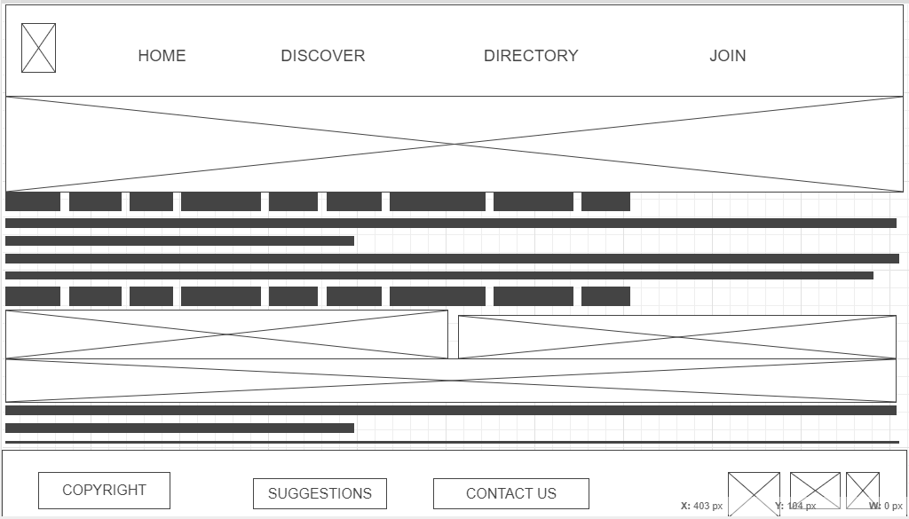

Overview
Site Purpose
The Zion of Jinja Chamber of Commerce acts as a realm of economic bridge, leadership convener and community champion. We promote business through member services, economic and community development, and member policy that balances economic prosperity and establish self reliance"
Audience
The typical visitors to this site are those willing to be self reliant and selfless. We are looking at them who are business men and women to be, members who are involved in the planning process of community activities who would need services, vendors and partners, donors, funders and those who may refer clients to our services and those people interested in learning all about what Zion Chamber of Commerce, is doing to contribute to the development of the region. we are also looking at those who have relocated and need guidance economically and also those who would like to joing the chamber.so if you are looking for a economical love, then we are the ones to help you get the life time experience to remember. we are accessible through any device that can connect to the internet.
Scenarios
Question: "I'm starting a new business in the area and need information on the registration process, permits, and any local incentives. Where can I find details on setting up and running a business here?" Question: "As a local business owner, I'm I love networking events and community activities. Can you provide a calendar of upcoming chamber events, including networking opportunities, community activities and any business-related gatherings? Question: "I recently relocated to this region and am looking for essential community services and resources. Is there a section on the website that highlights local services, healthcare facilities, schools, and other community resources?" Question: "How is the chamber actively contributing to the economic development of the region? Are there initiatives, partnerships, or programs in place to support local businesses and attract new investments?"
Style Guide
Color Palette
Palette URL: https://coolors.co/1d2012-8eaa46-ebedef-3f84c0-b3001b| 1d2012 | 8eaa46 | b3001b | 3f84c0 | ebedef |
|---|---|---|---|---|
| 1d2012 | 8eaa46 | b3001b | 3f84c0 | ebedef |
Typography
Heading Font: "Playfair Display"
Paragraph Font: ""Lobster&family""
Normal paragraph example
And verily I say unto you, that the aconditions of this law are these: All covenants, contracts, bonds, obligations, boaths, cvows, performances, connections, associations, or expectations, that are not made and entered into and dsealed by the Holy Spirit of promise, of him who is eanointed, both as well for time and for all eternity, and that too most holy, by frevelation and commandment through the medium of mine anointed, whom I have appointed on the earth to hold this gpower (and I have appointed unto my servant Joseph to hold this hpower in the last days, and there is never but one on the earth at a time on whom this power and the ikeys of this priesthood are conferred), are of no efficacy, virtue, or force in and after the resurrection from the dead; for all contracts that are not made unto this end have an end when men are dead.
Colored paragraph example
19 And again, verily I say unto you, if a man amarry a wife by my word, which is my law, and by the bnew and everlasting covenant, and it is csealed unto them by the Holy Spirit of dpromise, by him who is anointed, unto whom I have appointed this power and the ekeys of this priesthood; and it shall be said unto them—Ye shall come forth in the first resurrection; and if it be after the first resurrection, in the next resurrection; and shall inherit fthrones, kingdoms, principalities, and powers, dominions, all heights and depths—then shall it be written in the Lamb’s gBook of Life, that he shall commit no hmurder whereby to shed innocent iblood, and if ye abide in my covenant, and commit no murder whereby to shed innocent blood, it shall be done unto them in all things whatsoever my servant hath put upon them, in time, and through all eternity; and shall be of full force when they are out of the world; and they shall pass by the angels, and the gods, which are set there, to their jexaltation and glory in all things, as hath been sealed upon their heads, which glory shall be a fulness and a continuation of the kseeds forever and ever.
Navigation
Zion Of Jinja Commerce Chamber Site Map
Wireframes
4 Wireframes Below
Home
[Additional details not in the wireframe]
Discover
[Additional details not in the wireframe]
Directory
[Additional details not in the wireframe]
Join
[Additional details not in the wireframe]